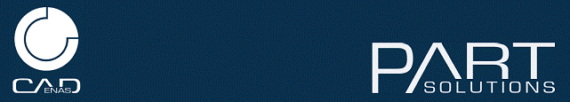
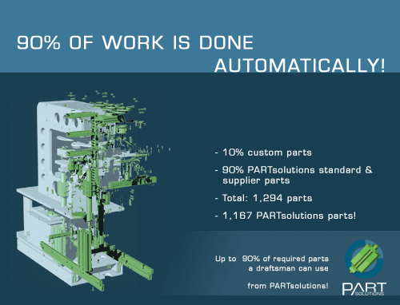
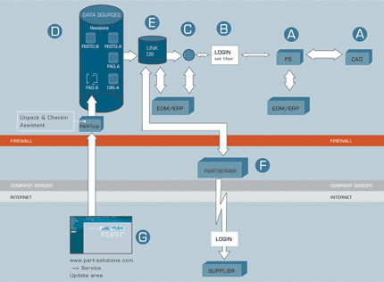
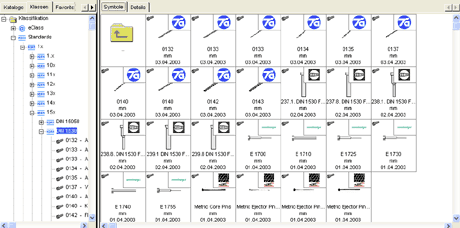
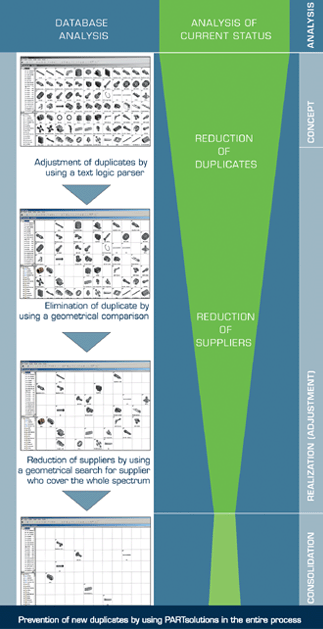

|

1. Giriþ
Akýllý parça yönetimi, standart parçalarýný ve standart elemanlarýný yönetmek isteyen her modern firmanýn ihtiyaç duyduðu en kritik konulardan bir tanesidir. Þu anda akýllý parça yönetimi yazýlýmýnda en önde gelen yazýlým CADENAS firmasý tarafýndan piyasaya sürülen PARTsolutions ve eCATALOGsolutions yazýlýmlarýdýr. PARTsolutions iþ akýþýnýz içerisine kolayca entegre olarak prosesiniz içerisindeki boþluklarý doldurur. Ayný zamanda CAD ve ERP gibi sistemlere de kolayca entegre olarak sizin ve çalýþanlarýnýzýn gerekli olan tüm bilgilere tek bakýþta ve kolayca ulaþmanýzý saðlar.

PARTsolutions bütün CAD sistemlerine uygun ara yüzüyle, içerisinde milyonlarca parça bulunan kütüphanesiyle tasarýmlarýnýzda ve iþ akýþýnýz içerisinde karlý ve hýzlý çözümler sunar. Bunun yanýnda dünyada bir çok firma tarafýndan kullanýlan eCATALOGsolutions sistemiyle kendi dijital kataloglarýnýzý oluþturarak paylaþabilir ve 2.800.000'den fazla yurtiçi ve yurtdýþý sürekli büyüyen potansiyel müþteri aðýna ulaþabilir ve böylece müþterilerinizin kataloglarýnýza ulaþmasýný kolaylaþtýrýrsýnýz. Bu ayný zamanda bir takým maliyetlerden ve ek masraflardan kurtulmanýzý saðlar. Örneðin geleneksel pazarlama yöntemlerinde müþterileriniz ürünlerinize veya kataloglarýnýza internet sitenizden veya sizin hazýrladýðýnýz CD, kitapçýk gibi bir takým dökümanlardan ulaþmak zorundadýr. Fakat eCATALOGsolutions sistemiyle kendi kataloglarýnýzý dünyayla paylaþabilirsiniz. Buda sizin için yeni müþteri potansiyeli ve yeni pazarlar anlamýna gelmektedir.
2.Kullaným Alanlarý
2.1. Geliþtirme ve Konstrüksiyon
Bir mühendisin çalýþma zamanýnýn %70'ten fazlasý standart parçalarý araþtýrmakla ve parça tedarikiyle geçer. PARTsolutions mühendisin asýl amacýna yani ürün geliþtirmeye odaklanmasýný saðlayarak bu zamaný daha verimli kullanmasýna yardým eder. Resimde görüldüðü gibi standart ve tedarik parçalarýndan oluþan iþin %90'ý PARTsolutions tarafýndan yapýlmaktadýr.

Parça tedariki yapacaðýmýz firmalarýn ürün kataloglarýný incelediðimizde genellikle ürünün tekrar CAD ortamýna aktarýlabilmesi için yeterli verilere ulaþamayýz. Sonuç olarak ürünle ilgili verilere ulaþabilmek için yapýlan telefon görüþmeleri, yazýlý belgeler gibi bir çok prosedürle zaman kaybederiz. Ürün kataloglarýnda yer alan veriler tekrar CAD ortamýna aktarýlýrken bir takým data ve uyum sorunlarýný beraberinde getirmektedir.
Konstrüksiyon prosesinde EDM - ERP sistemlerinde dayanan ve ekonomik açýdan önemli olan veriler mevcut deðildir veya dikkate alýnmaz. Sonuç olarak yapýlan iþler bir kopyadan ibaret olmakla birlikte iþin bitiþ ve teslim süresi uzar ayný zamanda bu maliyetler üzerinde olumsuz etkiye yol açar.
Sonuç : PARTsolutions bütün bu problemleri çözer ve mühendislerin ürün konfügrasyonu ve makine elemanlarýný birleþtirmek gibi bir çok iþlem için kaybettiði zamaný ve maliyetleri azaltýr.
2.2. Standardizasyon ve Sýnýflandýrma
PARTsolutions firmanýzýn standart parçalarý ve sürekli kullanýlan tedarik parçalarýnýnýn dökümantasyonu ve sýnýflandýrýlmasý için bütünleþik geliþtirme ve yönetim araçlarýyla zaman tasarrufu saðlar.
Firmanýzýn 2D/3D parçalarý tutarlý ve güvenli bir veri tabanýnda oluþturularak saklanýr. Çünkü oluþturduðunuz 3D görüntü yalnýzca ön görünüþten ibaret deðildir ayný zamanda yan görünüþleri ve plan görünüþleri de mevcuttur.
Yanlýzca üç günlük bir çalýþmayla personeliniz standardizasyon çalýþmalarýnýzýn nasýl olduðu hakkýnda kolayca bilgi sahibi olabilir. (Bunun için diðer programlarda olduðu gibi özel bir program performansýna gerek yoktur)
Standardizasyon çalýþmalarýnýzýn en önemli avantajý, sizi CAD sisteminde oluþan deðiþikliklerden ve çoðu CAD sisteminde görülen gereðinden fazla veri depolamadan dolayý oluþan veri kayýplarýndan korumasý ve verileri güvenli þekilde saklamasýdýr.
Firmanýzda meydana gelen personel deðiþimleri ayný zamanda know how sorunlarýna yol açar çünkü giden personel bir takým datalarý da kafasýnda götürür. Bundan dolayý þirketinizin geleceði açýsýndan iyi bir dökümantasyon sistemine ihtiyacýnýz vardýr.
Parça verilerinin dökümantasyonu
- Her parça için döküman oluþturulabilir,
- Dökümanlar menü çubuðuna eklenebildiði gibi ayný zamanda arama aðacýna da eklenebilir,
- Ýstediðiniz döküman formatýný kullanabilirsiniz. Özellikle PDF ve HTML formatlý dökümanlar yaygýn olarak kullanýldýðýndan dolayý daha uygundur.
2.4. IT Planlama (PLM & ERP )
- Mühendislik prosesi sýrasýnda mühendis/satýn alma, CAD programý içerisinden veya bilgisayarýn masaüstünden "intellegnet part management - PARTsolutions" sistemi baþlatýlýr,
- Amaç ve yapýlacak iþlem belirlendikten sonra standart veya tedarik edeceði parça kütüphanelerine girer,
- Kullanýcý yapacaðý iþleme göre parçalarýn çeþitli görünüþlerine ulaþýr,
- Ýlgili referans data sistemi vasýtasýyla standart ve tedarik parçalarla ilgili geometrik dataya kolayca ulaþýlýr, E) Her parçayla ilgili gerekli bilgiler PARTsolutions ekranýnda gözükür. Parça seçme iþlemi yapýldýktan sonra, geometrik bilgiler PLM sistemine transfer edilir ve A)CAD sistemine aktarýlýr,
- Tedarikçiler PARTserver-web sistemi üzerinden data sistemine girebilirler. PARTsolutions ile yeni materyaller oluþturabilir veya revizyon edilmiþ tedarikçi kataloglarýný update edebilirler. Kataloglar yýlda birkaç kere revizyona uðrayabilir, bu nedenle ürün deðiþim bilgilerini almak ve eski bilgileri update etmek gereklidir,
- PARTsolutions ile entegre çalýþan update asistaný tarafýndan sisteminize download ettiðiniz kataloglar kontrol edilerek yeni versiyonlarý otomatik olarak PARTserver üzerinde kontrol edilir. Yeni bir kataloðu revizyon ve install etmeden önce onla ilgili bilgileri görüntüleyebilirsiniz,
Gerçek kontrol tedarikçi parçalarýndaki her deðiþikliðin belirlenmesi ve bu deðiþikliklerin doðrudan ERP sistemine aktarýlmasýdýr.

2.5. Satýn Alma
Tedarikçi karþýlaþtýrma
PARTsolutions akýllý parça yönetim sisteminden bir parça seçebilir ve diðer tedarikçilerin benzer parçalarýyla karþýlaþtýrabilirsiniz. Sonuç, karþýlaþtýrarak en ucuz tedarikçiyi bulmaktýr.
Parçalar için alternatif arama
Akýllý parça yönetimi sistemi PARTsolutions veri tabanýnda kendi parçalarýnýzý ve tedarik edilecek parçalarý bulma ve karþýlaþtýrma olanaðý saðlar ve böylece ticari fiyatlarýn kontrol altýnda tutulmasý mümkün olur.
Standart parçalardan üreticiye sunum
Veri tabanýnda uluslar arasý normlara göre sýnýflandýrýlmýþ parçalarýn standardizasyonuyla, sizin için sýnýflandýrýlmýþ önemli bir tedarikçi listesi meydana gelir. Tedarik edilecek parçalarýn sipariþ iþleminde kullanýlmasý BMEcat gibi e-marketlerin desteði ile akýllý parça yönetim sistemi PARTsolutionstan bir ERP sistemine üretici hakkýnda bilgi aktarýmý yapar.

2.6. Yönetim
"Parça çeþitliliðini azaltmak tasarruftur"
Toplam maliyetlerin %80'nini geliþtirme ve konstrüksiyon giderlerinin oluþturduðu kaçýnýlmaz olarak kabul edilebilen bir gerçektir. Bu nedenle bu prosesleri optimize etmek kaçýnýlmazdýr.
Sürekli büyüyen parça çeþitliliðini nasýl azaltýrýz?
Büyüyen ve geniþleyen þirketlerde farklý IT platformlarýnýn birleþmesi büyük problemlere yol açar. Bir "backend"ýn ortak kullanýmý çoðu zaman mümkün deðildir. Gereksiz bilgiler, tekrarlanan iþlemler ve tutarsýz bilgiler kaçýnýlmazdýr. Ayrýca kötü ve yetersiz arama fonksiyonlarý, bir takým hatalara ve yanlýþlýklara yol açarak durumu daha da kötüleþtirir. Bu nedenle maliyetler gereksiz yere yükselir.
"Bizim amacýmýz, direk veya dolaylý olarak parça yönetimine baðlý olan prosesleri rasyonalize ederek gereksiz yatýrýmlarýnýzý engellemektir"
Gereksiz parça kullanýmýnýn azalmasý nasýl gerçekleþir?
Yöntemimiz sýkýntýlarýnýzý ve benzer parça kullanýmlarýnýzý hemen engelleyerek sizi gereksiz yatýrýmlardan kurtarmak ve size geniþ bir finansal açýlým saðlamaktýr. Ýlkönce benzer tanýmlama numarasýna sahip parça araþtýrmasý yapýlýr, daha sonra farklý tanýmlama numarasýna sahip benzer parçalar araþtýrýlýr. Böylece bu iki adýmdan sonra kullanýlan parça sayýsýnýn önemli derecede azalmasý saðlanmýþ olur. Bir sonraki adým ise parçalarýn geometrik yakýnlýk araþtýrmasýdýr.
Maliyetlerin kontrolü
Azalan gereksiz verilerin tekrar büyümesini engellemek için tasarým mühendisinin etkili araçlara sahip olmasý gereklidir. Bunun için PARTsolutions, klasik sözcük araþtýrma, standart ve firma standartlarý araþtýrma özelliklerinden geometrik aramaya kadar deðiþen geniþ bir arama fonksiyonu özeliðine sahiptir.
Tedarik zincirindeki gereksiz verileri belirledikten sonra tedarikçi sayýsýný azaltmak mümkündür. Burada amaç, yönetim ve sipariþ aþamasýnda daha az efor sarf etmek ve daha iyi koþullar altýnda tedarik saðlamaktýr.
Diðer özellikler web sitesinden incelenebilir. (Üretim ve planlama, satýn alma ve daðýtým, dýþ servis saðlayýcýlar, depo bakým, iþ hazýrlama/üretim/NC )
Ýrtibat:
CPV Bilgi Teknolojileri Üretimi ve Danýþmanlýk Ltd. Þti.
PERPA Ticaret Merkezi A Blok Kat:11 No:1398
34384 Þiþli Ýstanbul
Tel: (212) 320 40 22
www.cpv-systemhaus.com |